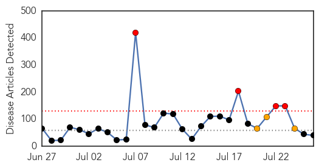
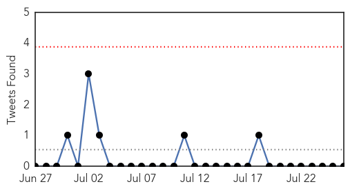
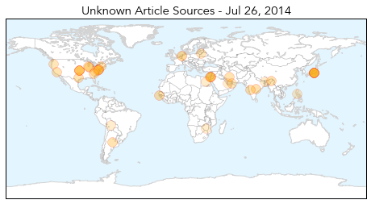
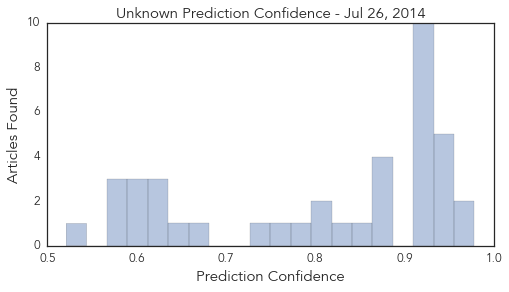

Toggle navigation
Early Warning
Daily Alerts
Unknown
Jul 26, 2014
Compare to:
-
Dengue Fever
Hemmorhagic Fever
Mold/Fungal Infection
Influenza
Meningitis
Pertussis / Whooping Cough
Middle East Respiratory Syndrome
Cholera
Hepatitis
Chikungunya
Yellow Fever
Bubonic Plague
West Nile Virus
Swine Flu
Ebola
Measles
Mumps
30 Day Trends
Web: 4
alerts
, 3
warnings
Twitter: 0
alerts
, 0
warnings
Top Articles:
0.978
Observer
0.959
Assam govt steps up measures to combat JE and AES
0.952
Assam government steps up measures to combat encephalitis
0.952
DVD claims three lives; 22 undergoing treatment
0.950
Arunachal Pradesh Sounds High Alert After Encephalitis Death
0.945
Greenville hospital to expand water filtration system to prevent infection
0.939
Virus alerts Bengal ignored
0.917
Chicago Tribune
0.917
Chicago Tribune
0.917
Chicago Tribune
0.917
Chicago Tribune
0.917
Chicago Tribune
0.917
Chicago Tribune
0.917
Chicago Tribune
0.917
Chicago Tribune
0.917
Chicago Tribune
0.917
Chicago Tribune
0.879
3Qs: Global impact of the Ebola outbreak
0.866
Rocket kills two children in Egypt near Gaza border -MENA
0.866
Turkey, citing ceasefire, lifts flight ban to Israel's Ben Gurion airport
0.866
Hamas agrees to 12-hour pause in Gaza fighting- spokesman
0.842
Arunachal sounds high alert after encephalitis death
0.826
GHS Installing New Water Filtration System
0.805
Mamata Banerjee Suspends Three Health Officials for Failing to Report Encephalitis
0.804
Lithuania to slaughter 20,000 pigs as swine fever spreads
0.785
Where to go when you need a doctor after midnight in Dubai - Emirates 24
0.757
A Newly Discovered Virus Is Lurking in Your Intestines
0.739
WHO Calls for Humanitarian Corridor to Transport Gaza's Wounded
0.661
Bengal seeks central help for encephalitis vaccination
0.651
Twists endure in federal response to W.Va. spill
0.619
Gov’t urged to ensure supply of arsenic-free rice
0.619
GSK seeks approval for world's first malaria vaccine
0.615
West Bengal government takes preventive measures to tackle Japanese encephalitis
0.605
Bengal seeks central help for encephalitis vaccination
0.605
Bengal seeks central help for encephalitis vaccination
0.590
'Kissing Bug' Disease Prompts Growing Concern in US
0.582
New gut virus lives in half the world's population
0.577
Politics as a resource for health
0.573
Ignorance kills Zim women says health expert
0.521
Drug-Resistant Superbug Increasing in Southeast U.S. Hospitals
Top Tweets:
No tweets found for Jul 26, 2014
Web/News Articles

Tweets

Article Locations

Article Confidences
